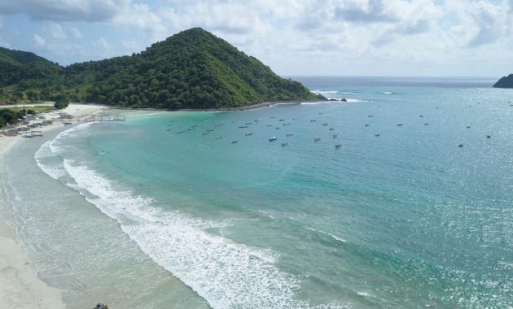

|  | Meski memungut retribusi murah, namun fasilitas yang ada di pantai ini cukup lengkap dan representatif. Mulai dari lahan parkir luas, kamar mandi dan WC, berudag untuk dipakai beristirahat, persewaan sunbed, papan surfing, hingga perahu. Selain itu tersedia juga rumah makan, serta warung-warung tradisional beratap ilalang yang menjual berbagai olahan seafood seperti sate ikan, kepiting bakar, bakso ikan dan berbagai menu yang lain. Keberadaan warung-warung tradisional itulah yang membuat para wisatawan mancanegara kerap menyandingkan Pantai Selong Belanak dengan Hawaii, disamping tekstur alamnya yang juga hampir mirip. Disebut-sebut sebagai Hawaii-nya Lombok, Pantai Selong Belanak yang saat ini tengah dalam pengembangan, perlahan tapi pasti semakin banyak dikunjungi para wisatawan. |